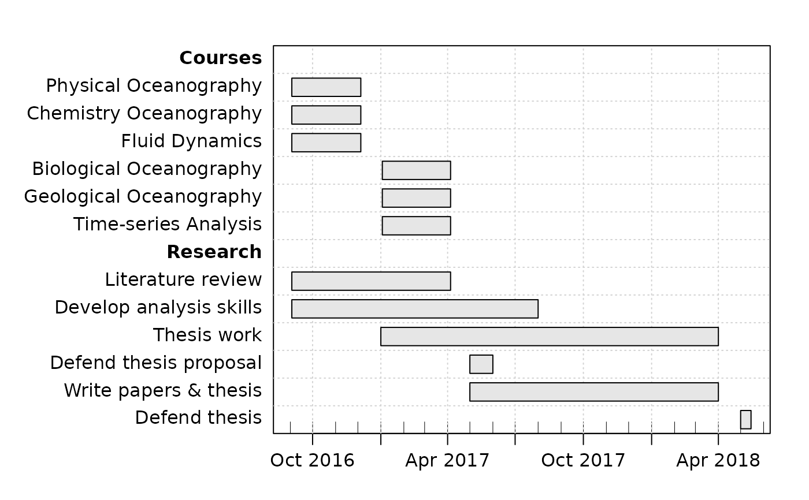

This can be a simpler method than using as.gantt(), because
tasks can be added one at a time.
Arguments
- g
A gantt object.
- description
A character string describing the task.
- start
A character string indicating the task start time, in a format understood by
as.POSIXct(). Set to""(the default) to indicate thatdescriptionis a heading, with no start and end time.- end
A character string indicating the end time, in a format understood by
as.POSIXct().- done
A numerical value indicating the fraction done.
- neededBy
An integer indicating a task that depends on the completion of this task. If this is
NA, then the task is not needed by any other task.- key
An optional value indicating the desired key value. If not given, this will default to one beyond the highest key in
g. Otherwise, ifkeyis an integer matching a task that is already ing, then that task is replaced; otherwise, the new task is placed between the tasks with integral keys on either side of the task. For example, settingkey=4.5places this between existing keys 4 and 5 (and then renumbers all keys to be integers); see “Examples”.
See also
Other things related to gantt data:
as.gantt(),
gantt-class,
gantt,
plot,gantt-method,
read.gantt(),
summary,gantt-method
Examples
library("plan")
g <- new("gantt")
g <- ganttAddTask(g, "Courses") # no times, so a heading
g <- ganttAddTask(g, "Physical Oceanography", "2016-09-03", "2016-12-05")
g <- ganttAddTask(g, "Chemistry Oceanography", "2016-09-03", "2016-12-05")
g <- ganttAddTask(g, "Fluid Dynamics", "2016-09-03", "2016-12-05")
g <- ganttAddTask(g, "Biological Oceanography", "2017-01-03", "2017-04-05")
g <- ganttAddTask(g, "Geological Oceanography", "2017-01-03", "2017-04-05")
g <- ganttAddTask(g, "Time-series Analysis", "2017-01-03", "2017-04-05")
g <- ganttAddTask(g, "Research") # no times, so a heading
g <- ganttAddTask(g, "Literature review", "2016-09-03", "2017-04-05")
g <- ganttAddTask(g, "Develop analysis skills", "2016-09-03", "2017-08-01")
g <- ganttAddTask(g, "Thesis work", "2017-01-01", "2018-04-01")
g <- ganttAddTask(g, "Defend thesis proposal", "2017-05-01", "2017-06-01")
g <- ganttAddTask(g, "Write papers & thesis", "2017-05-01", "2018-04-01")
g <- ganttAddTask(g, "Defend thesis", "2018-05-01", "2018-05-15")
# Set 'font' for bold-faced headings
font <- ifelse(is.na(g[["start"]]), 2, 1)
plot(g, ylabel=list(font=font))
